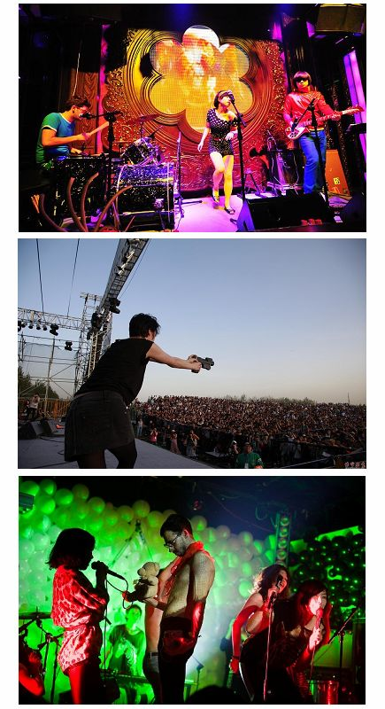

Archives : 2011-06
记忆@苏州 @ Jun 23, 2011

循环的圆。 @ Jun 22, 2011

每天早晨上班和中午下班的路上会遇到在红绿灯处卖栀子花的中年男人。往年也是他卖花来着，今年兰花季节时第一次见到他，猛地一惊，面色更加焦黄，胡子和头发花白，依然瘦弱，邋遢，戴着一顶让人毫无印象的遮阳帽。今年他还在靠卖花来养家糊口？为什么年复一年，生活依然没有改变？
这一季家里的栀子花没有盛开，绿叶却长得茂盛。每每遇到他会掏钱买上几束，有时红灯只剩几秒，来不及，会摇下车窗说：“中午买”或“明天买”...倘若下一次没有遇上，好象失信于他似的。有一次，拿了十元买五元的花，他说：“算了，10元给你X束...”事实上，多少束对于我来讲，并不重要。只希望明年不要再见到他卖花，即使还在车流中卖花，希望他能比今年看上去健康，红润。

这把仿古陶壶底部渗水，为了确认的确渗水，找了处干燥台面盛水放了一夜。貌似陶制器皿较常见的问题。看到网上有人灌了米汤进去，渗水问题好转。当然它也不是汩汩地往外冒水，而是一点点的渗透。可以喝铁观音使用，对于即加热水即喝的小茶壶，这问题在我也是可以被忽略的。

看完每天两集的《水浒传》，带狗外出散步。凉爽的夏夜可以让一整天的心情达到高潮，悲伤什么的，走着走着就被风吹散了。夜里9点多钟，散步的小径安静无人，更没有其他狗狗窜出来打搅。两只狗狗在它们认为的安全范围里随我往返于小径两边，下午的雨水还残留在草丛中，打湿了狗狗的皮毛。吸足了雨水又在傍晚挥发去水分的半干路面，在草地灯的照射下显得异常干净，若明天太阳一出来，它又是另一副摸样。从终点回到起点，一个循环的圆圈，一切的事物。
片段 @ Jun 19, 2011

这两天无疑是快乐的，快乐地时候看世界的眼神都变了。
***遛狗：天气凉爽，周日两次尽量延长遛狗时间，小区后面池塘里的荷花已经长满茂盛的叶片，池塘边有一幢独栋开始装修，路遇野猫和两只野鸽子，松开LUKE的绳套，让两狗狗在追逐它们的过程中多一些乐趣。放心，一旦野猫停下来返身弓背，LUKE会立即四肢伏地，不知所措地看着我，鸟儿们也会在它们到达的那一秒迅速飞走。今天傍晚遛狗时还遇到一个1岁左右的男孩儿，居然与奈良美智长得很象，皮肤异常白皙。看见我家两狗狗，不停地笑，露出里面零星长出来的几颗小奶牙，这么可爱的孩子，希望再次遇到。
***本命年：外甥女的堂哥过暑假从美国回来，据说本命年发生了几件很背儿的事。回来签证要等check；未按期返回，一年时间的实习工作因此泡汤；独自前往英国看曼联球赛，坐在第一排，小贝的确很帅很MAN，可整个比赛过程不过是看着曼联被对手蹂躏，异常伤心；老师安排三个学生做项目，因印度同学抄袭，他和另一同学即使是自己完成的作业，项目仍未通过，且算作三个人的抄袭，老师的回答：“你们是一个group。”抄袭在美国属于严重问题，重到可以被退学。
***更年期症状：广播里报道医院将增开更年期科室，现在女性的平均绝经年龄在49.89岁，应适当补充雌性激素，一听到激素会联想到癌症，据说补充雌性激素与普通的激素补充不同，具体如何新闻里也没给个解释。更年期的症状为：焦虑、紧张、易怒、失眠。除了没绝经，这些症状俺们都有，难道俺们每天工作的状态是更年期症状？伤不起哦。有人因苏菲410MM超长夜用卫生巾，世界观受到影响，她说“因为我发现我只有四片卫生巾那么高，我觉得我好渺小。” 嗯，换个角度看问题，你应该为自己还有大姨妈而感到欣慰。
***幻想退休：做家务时，偶尔会想象自己退休赋闲在家的情形，会不会因闲生事？应该会很忙吧，要学摄影和绘画，拾起阅读的能力，旅游和照顾家庭会需要不少精力和时间。不过，退休后不用每天赶，可以睡到自然醒，多美啊。
***海底捞火锅：话说去海底捞吃火锅，等桌有各种游戏玩，有水果、零食，有座位和小桌子，孩子们玩耍有服务员陪。服务好到去卫生间，有人给你打开水龙头，挤好洗手液，递上毛巾。每个服务员精神饱满，热情洋溢。由此我想建议我做维修保养的4S店，可以让海底捞对其进行职业培训，以提高服务意识和质量。还可以请海底捞来我们公司做培训，消解消解同事们的怨气。

***围城：这是我前面日志里提到的平均4天就要飞一次的女律师，她把这三年的登机牌放在一起拍的纪念照，如此频繁的出差，好身体也经不起这么折腾。据说有一次两天内飞三个城市，最后飞机落地的时候她已经搞不清楚到底是在哪儿了。绝对地围城，有人想去顶级公司工作，如果真有本事顶级公司也不会拒绝你的。可是真正在世界顶级公司里做海外上市的她，却主动辞职，理由是“要回家睡觉。”半年后老板再次邀请她返回，可她只愿意接受partime的工作，这样是不是真能找回一些属于自己的生活呢？自从她和Angie来南京相聚之后，我时常会摘掉眼镜戴上隐型外出，希望明年体检医生还会说：“恩，角膜挺好的。”
终于写完了，我还真能韶......
一个愉快的夜晚。 @ Jun 18, 2011


“宠物同谋”欧洲巡演纪录片 @ Jun 15, 2011
如果你有半个小时的时间，请把这部纪录片看完，这是宠物同谋2011欧洲巡演的记录，最重要的是他打动了我们自己，觉得这三年的生活是有意义的，但这仅仅是过去，宠物同谋2.0版本快开始吧，感谢导演何龙。--来自“宠物同谋”
虎子，祝你在音乐这条路上玩得开心。

茶罐 @ Jun 15, 2011
“读到日本香道，器具中这款是中国南宋青瓷千鸟香炉。目前在德川美术馆藏。此物为织田信长和丰臣秀吉所有。传说有大盗偷宝，顶上的鸟会鸣叫，盗因此被抓。想到上个月景德镇旅行，朋友买的韩国设计师的茶罐，顶有鱼，形态活。虽是现代设计，美中也有传承，看见此宝，我不觉产生了联想，是为证明。”（来自问问）

这款散茶瓷罐也有着南宋青瓷千鸟香炉的设计风格，收于景德镇。


自给自足 @ Jun 15, 2011
自从收了宠物剃毛器，两宠再没去过宠物美容店。陆续又收了指甲钳、止血粉等若干用品。每每给它们剪指甲之前会很纠结...我家LUKE是扬州虚子，刚刚拿起他的爪子还没下手，它便开始哼哼，想来有不愉快的剪甲经历？土豆倒是沉默得可以，偶尔剪到血管，血汩汩地冒出来，它也没声音，沉默姐啊。
每次美容会先修毛，停下来喝杯水，出去带它们遛个弯，然后再开始洗澡，吹风。两只狗同时洗澡吹风，是件体力活。1500W的家用吹风机力道有限，想搞台宠物店的吹水机回来试试。这一套装备，还真需要只箱子呢。

土豆的眼神偶尔透露出与它经历相符的小狡猾，但不仅仅是狡猾这么点内容，还有怯懦和冷漠。偶尔回头看到它这样的眼神，心里拔凉拔凉的，怪不得它，是人类赋予它的经历造成的。

雪纳瑞的胡子吃饭喝水会拖到食盆里，于是将嘴唇一圈的毛剃了。爱狗狗的人，不会计较它毛色是黑是白，不会计较它多么不听话，爱它们就会想要担负起照顾它们的责任。

近期家里有羊蹄子，这是LUKE最爱的零食。它把自己的羊蹄子啃完了，土豆的也被它叼走，于是它除了喝水吃饭散步外，时刻都守着羊蹄子，其实可以藏起来啊？邻居家狗狗的主人每天上班前会给狗狗一只剥壳鸡蛋，狗狗会找地方藏起来，但每次主人回家发现那颗蛋早被狗狗吃了。LUKE因为时刻守卫着羊蹄子，失去多少乐趣。所以无论狗狗还是人，对于事物的热爱，还得有自控的能力。

DRESS BLOG @ Jun 15, 2011
公司组织体检，嫌麻烦本来不想去的。现场没查出有什么毛病，自己都不太相信，等各种化验结果。
去年那一年疯狂工作的状况，怎么会没毛病呢？一定是内伤吧，内分泌什么的紊乱？疯狂的前提不是主观意愿，而是被动疯狂的工作。回想去年那种忙碌、狂躁、紧张、失眠....整个儿就是一疯子。难道不是这世界先疯了的吗？
每天都不想去上班，不是厌恶工作，而是厌恶每天“赶”的状态，尽量避免出差，可还是有过于奔波的疲惫，想停下来休息一会儿。早晨广播新闻里说赚钱上大家都希望吃快餐，有些浙商不满足一分一厘的挣辛苦钱，转战资本市场，事实证明的确挣得盆满钵满。有人说：“资本市场是一厘米的啤酒，100厘米的泡沫。”两周前上海有朋友来，正是在资本市场工作，意想不到的辛苦，她把这三年的登机票集中起来计算了一下，平均每4天就要飞一趟...无论是在挣辛苦钱，还是奋战在资本市场，最大受益者肯定不是俺们。

外出就餐 @ Jun 09, 2011
连料理店的名字都没记住，水游城新开的一家。下午抓紧一切时间工作，为了能按时下班，及时赴约。坐下来倒腾了好一会儿相机，近来夜晚室内拍摄，效果不佳有两次，很有挫败感。
好久没到那么多人的公共场所吃饭了，料理店的人真多。旁边一桌坐了一男多女，身边放了多个大牌包包，气质谈吐和衣着品味实在是.......饭后在甜品店坐着，透过玻璃隔断看着来来往往的都市青年，满目苍夷。时代变了，人也变了，从里到外。赏心悦目的人们都躲哪里去了？
从餐厅到甜品店，穿行在水游城间，其实蛮难怀着悠闲的心情慢悠悠走过。可能每天节奏都是一样快，匆匆往返于家于公司于菜场之间，家常生活的细碎烦琐对于繁忙的工作反倒有了几分抚慰，当然因此对社会对人生甚至对情感少了一些关注与思考，该来的来，该走的走，顺其自然，精力或多或少被占用着，让人仿佛患了失语症（我以前是个多么爱说话的人啊），可是对于生活的热情，还是不愿失去。


景德镇之行-下篇 @ Jun 08, 2011
景德镇瓷器的主要原料“高岭土”就产于瑶里附近的高岭山，瑶河流域是景德镇瓷业的发祥地。在降温细雨的天气下游览瑶里古村落，别有一番趣味，尤其是能穿过村民家，前庭后院菜园子里的气味，不经意瞥见屋内的日用品、旧家具，都有着小时候的记忆。家家户户敞着家门，民风淳朴。
去往瑶里的途中，路边是麦田，远处是青山，偶然路过或汩汩流淌或静谧如镜的河流，村舍散落在田野间，鸟儿悠闲地停留在耕牛的脊背上，象是一对老朋友。虽然变天降温，但拂面而来的风中夹着湿气，带来一股子大自然的清新气味儿，多久没有呼吸到这样的空气了？


路边的风景常常让我们停下车，驻足观望一番。我拿着相机下到田里，走向这头耕牛。白色的鸟儿从它背上飞走，它则向我投来好奇又惊讶的眼神，且试图向我走近。我当然有些担心，不过它被绳子牵在田头，不怕不怕。问问和树蛙在高处忍不住笑起来。。。

从景德镇通往瑶里的路修得很好了，当地人去瑶里景区是免门票的。这次遗憾的是没有亲身体会大山深处的森林与瀑布，夜空与清晨。


这辆车载着我们仨儿往返行驶了1000多公里，旅途中230匹马力的表现不错。一路上和问问换着开，回南京的晚上遭遇倾盆大雨，好在有惊无险。多么想继续开到东面的婺源，就这么开啊开啊，有看不完的风景，与青山绿水做伴，不要回到灰尘漫天的城市。

进入瑶里古镇。（以下文字来自网络）瑶里古镇 地处皖、赣两省、四县（安徽祁门、休宁、江西婺源、浮梁）交界处，距景德镇市区 50公里。境内旅游资源十分丰富，素有“瓷之源、茶之乡、林之海”的美称。瑶里，古名“窑里”， 远在唐代中叶，这里就有生产陶瓷的手工业作坊，因瓷窑出名而得名。直到本世纪初，瓷窑外迁，“窑里”才改名为瑶里。


瑶里，我们也仅仅是匆匆一瞥，希望以后能为瑶里专门做一次旅行计划。
景德镇之行-上篇 @ Jun 08, 2011


香品 @ Jun 07, 2011


一如往常般细碎 @ Jun 07, 2011

打算更新博客，又想喝茶。上午喝了一杯咖啡，中午一罐咖啡饮料，下午一口凉白开水。好象渴了一天似的。好吧，更新博客与喝茶不矛盾，一块儿来吧。
端午节连着休息三天，一如往常般细碎，每天事情排得满满，最重要的事情是带两只狗狗去宠物医院洗了牙结石。据说LUKE在麻醉过程中出现幻觉，做梦般哼哼唧唧，手术结束后幻觉仿佛还未消失...它们进入手术间的刹那，恐惧一晃而过，每一次麻醉都伴随着一定的风险,不想就此失去它们任何一个。手术没有出现意外，两狗狗被拔去呼吸麻醉器几分钟后，如期苏醒过来，短暂的失明期，摇摇晃晃寻找熟悉的主人的气味儿。这一幕，更加深了我对它们的爱。
假如-信乐团 @ Jun 04, 2011
（请点击赏听）"假如" ，送给已经到来的六月。
歌名:假如
演唱:信乐团
专辑:挑信
一份爱能承受多少的误解
熬过飘雪的冬天
一句话能撕裂多深的牵连
变的比陌生人还遥远
最初的爱越像火焰
最后越会被风熄灭
有时候真话太尖锐
有人只好说著谎言
假如时光到流我能做什么
找你没说的却想要的
假如我不放手你多年以后
会怪我恨我或感动
想假如是最空虚的痛
一个人要看过几次爱凋谢
才甘心在孤独里冬眠
最初的爱越像火焰
最后越会被风熄灭
有时候真话太尖锐
有人只好说著谎言
假如时光到流我能做什么
找你没说的却想要的
假如我不放手你多年以后
会怪我恨我或感动
想假如是最空虚的痛
为什么幸福都是幻梦
一靠近天堂也就快醒了
或许爱情更像落叶
看似飞翔却在坠落
假如真可以让时光到流你会做什么
一样选择我或不抱我
假如温柔放手你是否懂得
走错了可以再回头
想假如
是无力的寂寞
粽子节 @ Jun 02, 2011
晚上从问问家拎回一袋粽子，这才意识到端午节快到了。上周错过朋友们包粽子的活动，不过能吃到问问妈妈包的粽子也幸福。自家妈妈每年也会包粽子，但不知道今年包了没有？听说朋友们包粽子活动中，没有一个人会哦，是查了网络上包粽子的步骤方法，现场学习动手的。
由此想到，当你选择一个社交圈时，其实你是选择了一种生活的方向。
晚饭后放水，大小火煮了四小时，真正是等了四小时，关火，这才睡去。